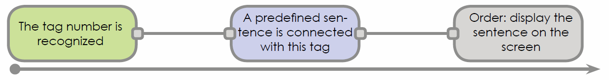
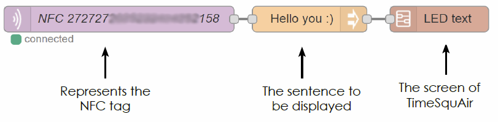
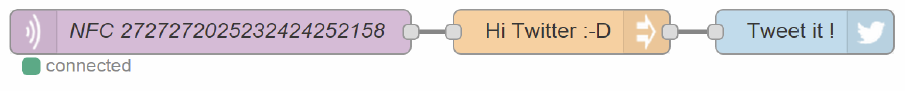
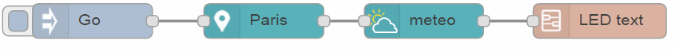

Try and understand
This tutorial explains the basic behavior of TimeSquAir, using a very short typical example.
The top of TimeSquAir contains a tag reader.
Let’s try it as a first TimeSquAir use.
In your box, you have NFC tags. They will allow you to trigger actions just by passing them above TimeSquAir. Please take the one with the logo of TimeSquAir and pass it on your TimeSquAir. You’ll hear a “beep”, then a message will be displayed on the LED matrix!

To learn more about these NFC tags, go to the “Trigger with NFC tags” tutorial.
How it works
When you passed the tag on TimeSquAir, an action has been triggered : to display a phrase on the screen.
Here’s what happened just after the “beep” :

Which corresponds to the following scheme:

The three blocks that you see are the nodes : they compose your application.
When nodes are interconnected, “wired”, they form a chain of nodes called a flow : flows are your applications, your services.
TimeSquAir always needs a trigger: in this case it is the tag, but it can also be a tweet, a click on the page, an alert …
Then you must tell him what to do with this trigger, define an action to do using the information received.
When the trigger triggers, it sends a message on the wire to the following node, from left to right, which uses it and then sends it to the following node, until the last node is reached.
In the Visual Editor (see The Visual Editor tutorial to learn more about it), you have the following flow:

Below are some more example of the trigger/action scheme:
Tweet a sentence by passing a tag on TimeSquAir :

Display the weather in Paris :

Every TimeSquAir application uses the same format: a trigger will cause an action (of which you define the settings). You choose the trigger nodes, nodes of calculation and output nodes.
The Trick
The trick used by the flow to integrates nodes is the wire. Every node knows the structure of the message on the wire. Thus, any node build can interract with any node.
Where to go now
- Use the tutorial “The Visual Editor” to discover IBM’s Node-RED that allows to change the behavior of your TimeSquAir.